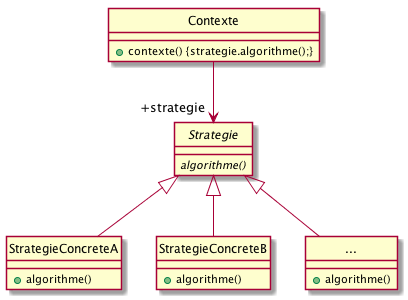

PreReq |
1. Je sais programmer en Java.
2. J’ai conscience qu’il faut réfléchir avant de se lancer dans le codage.
3. Je maîtrise les concepts objet de base (héritage, polymorphisme, …).
4. J’ai réalisé le TD |
ObjTD |
Comprendre ce qu’est une conception et implémenter mon premier patron. |
Durée |
2 TP de 1,5h (sur 2 semaines). |
1. Rappel sur le patron Stratégie
|
|
Design pattern : Stratégie (Strategy)
Stratégie définit une famille d’algorithmes, encapsule chacun d’eux et les rend interchangeables. Il permet à l’algorithme de varier indépendamment des clients qui l’utilisent.

Figure 1. Modèle UML du patron Strategy
|
2. Reprise du TD
|
|
Les TPs sont prévus se dérouler sur eclipse, mais vous êtes libre d’utiliser l’éditeur de votre choix. |
-
Téléchargez le code de l’application
SuperCanardBofexistante TP1.zip.
Attention quelques étapes sont nécessaires à l’utilisation de ces fichiers sous eclipse/Windows :
-
Importer dans eclipse le projet (menu:File[Import… > Existing Projects into Worspace] et choisir
TP1.zipque vous venez de télécharger. -
Positionner
Junitdans leClasspath(btn:[Clic Droit] sur votre projet menu:Properties[Java Build Path > Add Library] et choisirJunit4) -
Si Windows, dans la ligne suivante de
SuperCanardTest, il faut remplacer les deux points de l’option-cppar un point virgule :executionProgrammeATester = Runtime.getRuntime().exec("java -cp .;./bin "+programmeATester);
-
-
Lancez l’application elle-même pour vérifier que tout fonctionne.
-
Regardez le programme de test fonctionnel
SuperCanardTestqui vérifie de manière automatique que tout fonctionne comme on le faisait en MPA. -
Regardez le programme de test fonctionnel
SuperCanardTest2qui vérifie de manière automatique que tout fonctionne, mais d’une manière plus proche des tests unitaires. -
Implémentez rapidement le patron Strategy comme préparé en TD en modifiant le code en conséquence.
-
Rejouez les tests pour vérifier que tout fonctionne toujours.
3. Jeu d’aventure
{kind=link}
3.2. Améliorations
On souhaite maintenant obliger les concepteurs de tout nouveau Personnage à
implémenter systématiquement à l’instanciation le comportement d’arme.
-
Proposez une solution à ce problème
il est tout à fait légal de créer un constructeur pour une classe abstraite… -
Implémentez cette solution en modifiant votre application
-
Testez d’ajouter une nouvelle classe de
Personnagequi n’implémente pas le comportement et vérifiez que ça ne passe pas la compilation.
3.3. Utilisation du comportement dynamique
On souhaite pleinement bénéficier du changement possible de comportement à l’exécution.
-
Réalisez une application qui, à partir d’un menu, permet de créér un personnage parmis les types possibles, et de lui affecter une arme.
-
Vérifiez qu’en changeant d’arme, le comportement change.
Appendix A: Exemple d’organisation en paquetages
Le principe est d’avoir :
-
un package pour les classes métiers (e.g.,
Canard,Colvert, etc.) -
un autre pour les comportements (1 par type de comportement en fait)
-
dans chaque comportement avoir l’interface, puis un package spécifique aux implémentations (
impl).
Ce qui donne pour l’application SuperCanard :
├── appli
│ ├── Canard.java
│ ├── CanardEnPlastique.java
│ ├── Colvert.java
│ ├── Leurre.java
│ ├── Main.java
│ └── Mandarin.java
└── comportements
├── cancaner
│ ├── ComportementCancan.java
│ └── impl
│ ├── CanardMuet.java
│ ├── Cancan.java
│ └── Coincoin.java
└── voler
├── ComportementVol.java
└── impl
├── NePasVoler.java
└── VolerAvecDesAiles.javaAppendix B: Modèles et tests d’architecture
En utilisant la doclet pour Javadoc de plantUML, il est possible d’obtenir le diagramme de classe correspondant à son architecture de manière automatique.
Prenons l’exemple de l’application SuperCanardBof.
On peut écrire le script suivant :
#!/bin/sh
UML='model.uml'
TYPE='PNG'
DOCLETPATH='/Users/bruel/dev/teaching/dut/cpoa/doclet'
echo "Creating $UML..."
javadoc \
-private \
-quiet \
-J-DdestinationFile=$UML \
-J-DcreatePackages=false \
-J-DshowPublicMethods=true \
-J-DshowPublicConstructors=false \
-J-DshowPublicFields=true \
-doclet de.mallox.doclet.PlantUMLDoclet -docletpath $DOCLETPATH/plantUmlDoclet.jar \
-sourcepath src src/**
echo "Done."
TYPE='png'
echo "Converting $UML to $TYPE..."
java -jar bin/plantuml.jar \
-config "./config.cfg" \
-t $TYPE $UML
echo "Done."Ce qui permet d’obtenir automatiquement le diagramme suivant :
{kind=link}
|
|
Observez dans les sources des fichiers Java comment il est possible d’ajouter des éléments directement dans le code à destination du plantUML généré. |
L’intérêt est double :
-
le modèle est par définition conforme au code
-
on peut le tester :-)
Voici un exemple simple de test qui vérifie quelques points simples de l’architecture de l’application :
require "minitest/autorun"
MODEL_NAME = "model.uml"
class TestGeneratedModel < MiniTest::Unit::TestCase
#------------ General tests about plantUML
def test_generated_model_exists
assert_equal(true, File.exists?(MODEL_NAME))
end
def test_generated_model_is_plantuml
assert_equal(true, File.readlines(MODEL_NAME).grep(/@startuml/).any?)
end
def test_generated_model_exists
assert_equal(true, File.exists?(MODEL_NAME))
end
#------------ Specific tests about expected content
def test_class_Canard_is_abstract
assert_equal(true, File.readlines(MODEL_NAME).grep(/abstract Canard/).any?)
end
endCe qui donne le résultat :
$ ruby checkModel.rb MiniTest::Unit::TestCase is now Minitest::Test. From checkModel.rb:12:in `<main>' Run options: --seed 21820 # Running: ... Finished in 0.002029s, 1478.5609 runs/s, 1478.5609 assertions/s. 3 runs, 3 assertions, 0 failures, 0 errors, 0 skips
Si vous voulez vérifier que votre modèle d’architecture est bien conforme à ce qui est demandé, vous pouvez utiliser le programme de test suivant :
Canard en Ruby (source ici)require "minitest/autorun"
MODEL_NAME = "model.uml"
module MiniTest
class Unit
class TestCase
#Define new assertion
def assert_contains(string_to_test, substring_to_verify)
assert_match( string_to_test, substring_to_verify)
end
def assert_not_contains(string_to_test, substring_to_verify)
assert_not_match( string_to_test, substring_to_verify)
end
end
end
end
MiniTest::Unit.after_tests { p @_assertions }
class TestGeneratedModel < MiniTest::Unit::TestCase
#------------ General tests about plantUML
def test_generated_model_exists
print assert_equal(true, File.exists?(MODEL_NAME))
end
def test_generated_model_is_plantuml
assert_equal(true, File.readlines(MODEL_NAME).grep(/@startuml/).any?)
assert_equal(true, File.readlines(MODEL_NAME).grep(/@enduml/).any?)
end
def test_generated_model_exists
assert_equal(true, File.exists?(MODEL_NAME))
end
#------------ Specific tests about expected content
def test_class_Canard_is_abstract
assert_equal(true, File.readlines(MODEL_NAME).grep(/abstract Canard/).any?)
end
def test_class_Canard_has_ComportementCancan_behavior
assert_contains(/Canard\s+--> ".*" ComportementCancan/, File.readlines(MODEL_NAME).join)
end
def test_class_Canard_has_ComportementVol_behavior
assert_contains(/Canard\s+--> ".*" ComportementVol/, File.readlines(MODEL_NAME).join)
end
def test_ComportementCancan_is_an_Interface
assert_equal(true, File.readlines(MODEL_NAME).grep(/interface\s+ComportementCancan/).any?)
end
def test_ComportementVol_is_an_Interface
assert_equal(true, File.readlines(MODEL_NAME).grep(/interface\s+ComportementVol/).any?)
end
def test_ComportementCancan_Interface_has_concrete_implementation
assert_equal(true, File.readlines(MODEL_NAME).grep(/ComportementCancan\s+<\|\.\./).any?)
end
def test_ComportementVol_Interface_has_concrete_implementation
assert_equal(true, File.readlines(MODEL_NAME).grep(/ComportementVol\s+<\|\.\./).any?)
end
endAppendix C: Pour aller plus loin
-
Testez les limites de votre implémentation (par exemple avez-vous pensé à ce qui se passe si quelqu’un fait un
new Chevalier(null,null)?). -
Vous pouvez imaginer une application graphique :-)
-
Repérez la partie de votre application principale qui fait le lien entre une arme donnée et le comportement à affecter au personnage. Comment pourrait-on améliorer cette "correspondance"?
-
À propos de
SuperCanardTest2:-
c’est intéressant pour les méthodes qui produisent des lignes sur la sortie standard
-
ça reste du test unitaire qui se rapproche du test fonctionnel parce que l’on réécris le
main()dans les fonctions de test -
les méthodes produisent des messages sur la sortie standard. Bien sûr il aurait été préférable qu’elles retournent des
String
Java n’est pas l’idéal pour faire du test fonctionnel. Ce serait plus simple de faire les tests fonctionnels avec python ou ruby car ils sont proches de l’OS et plus efficaces pour faire toute sorte de parsing et de matching. Utiliser un autre langage pour les tests fonctionnels illustre aussi clairement qu’il s’agit de se placer à l’extérieur du programme testé.
-
Pour les test initiaux (
SuperCanardTest2), notez l’utilisation d’une expression régulière pour éviter les conflits d’OS pour le codage de la fin de ligne. Notez que depuis Java 8 il existe un\Rpour ça et que qu’il existe aussi la possibilité d’utiliserString System.getProperty("line.separator");pour les versions avant Java 7, etSystem.lineSeparator()depuis Java 7.
-
About…
Document réalisé par Dut/Info-S3/M3105 via Asciidoctor (version 1.5.1) de 'Dan Allen', lui même basé sur AsciiDoc.
Pour l’instant ce document est libre d’utilisation et géré par la 'Licence Creative Commons'.
 licence Creative Commons Paternité - Partage à l'Identique 3.0 non transposé.
licence Creative Commons Paternité - Partage à l'Identique 3.0 non transposé.